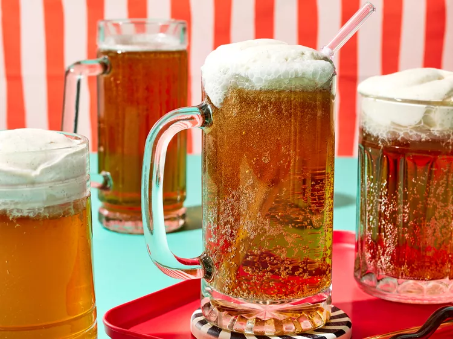

Butter Beer

Description
Butterbeer, from the Harry Potter book series, is described as foamy, spicy, and creamy.
The culinary team at Universal Orlando spent two years researching and developing the (closely guarded) recipe.
Ingredients
- 1/2 cup heavy cream
- 1/4 teaspoon ground cinnamon or pumpkin pie spice
- 1 pinch salt
- 2 tablespoons butterscotch topping
- 1 to 2 teaspoons lemon juice
- 6 (12 ounce) bottles cream soda
Steps
- Freeze 6 mugs or pint glasses until icy, at least 15 minutes.
- Meanwhile, for whipped topping, beat together cream, cinnamon, and salt in a medium bowl with an electric mixer at medium speed until stiff peaks form.
- Add butterscotch topping and lemon juice; beat again until soft peaks form.
- For each butter beer, pour 1 can cream soda into a mug; top with about 2 tablespoons whipped topping. Serve immediately.